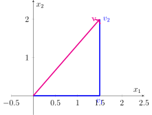
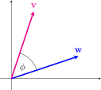
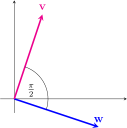
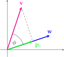
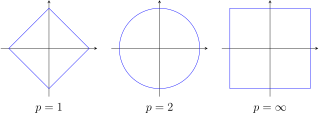

Normed Vector Spaces
Contents
Normed Vector Spaces#
Definition 2
A normed vector space is a vector space \(\mathcal{V}\) with a function \(\lVert\cdot\rVert:\mathcal{V}\rightarrow \mathbb{R}_+\), called norm, satisfying the following properties for all \(\vvec{v},\vvec{w}\in\mathcal{V}\) and \(\alpha\in\mathbb{R}\):
The norm measures the length of vectors.
Example 3
The \(d\)-dimensional Euclidean space is the space of \(\mathbb{R}^d\) with the Euclidean norm:

The Euclidean norm computes the length of a vector by means of the Pythagorean theorem:
The Euclidean norm introduces a geometric interpretation of the inner product of two vectors. The inner product is defined by the lengths of the vectors and the cosine of the angle between them.

In Machine Learning, the inner product is often used as a similarity measure between two points. The idea is that two points facing in the same direction have a cosine close to one, and hence a larger inner product than two points looking into distint directions. If two vectors are orthogonal, then \(\cos\sphericalangle(\vvec{v},\vvec{w})=0\) and the inner product is zero
Two vectors are called orthonormal if they are orthogonal and have unit norm \(\lVert \vvec{v}\rVert = \lVert\vvec{w}\rVert =1\).

Theorem 2
The inner product of a vector \(\vvec{v}\) and a normalized vector \(\frac{\vvec{w}}{\lVert\vvec{w}\rVert}\) computes the length of the projection \(\vvec{p_v}\) of \(\vvec{v}\) onto \(\vvec{w}\). Using the notation of vectors from the image below, we have

Proof. From the definition of the cosine in a triangle follows that
Example 4 (Manhattan norm)
The Manhattan norm is defined as:
Example 5 (\(L_p\)-norms)
For \(p\in[1,\infty]\), the function \(\lVert\cdot\rVert_p\) is a norm, where
The two-dimensional circles \(\{\vvec{v}\in\mathbb{R}^2\vert \lVert\vvec{v}\rVert_p =1\}\) look as follows:

So, the norm measures the length of a vector. Can we also measure the length of a matrix?
Yes, matrix norms are the same but different.
Definition 3 (Matrix norms)
We can extend the \(L_p\) vector normes to the element-wise \(L_p\) matrix norms:
Furthermore, we introduce the operator norm
Definition 4 (Trace)
The trace sums the elements on the diagonal of a matrix. Let \(A\in\mathbb{R}^{n\times n}\), then
\(\tr(cA+B)=c\tr(A)+\tr(B)\) (linearity)
\(\tr(A^\top)=\tr(A)\)
\(\tr(ABCD)=\tr(BCDA)=\tr(CDAB)=tr(DABC)\) (cycling property)
For any vector \(\vvec{v}\in\mathbb{R}^d\) and matrix \(A\in\mathbb{R}^{n\times d}\), we have
From this property derive the binomial formulas of vectors and matrices:
Orthogonal Matrices#
A matrix \(A\) with orthogonal columns satisfies
A matrix \(A\) with orthonormal columns satisfies
A square matrix \(A\in \mathbb{R}^{n\times n}\) is called orthogonal if
Theorem 3 (SVD)
For every matrix \(X\in\mathbb{R}^{n\times p}\) there exist orthogonal matrices \(U\in\mathbb{R}^{n\times n}, V\in\mathbb{R}^{p\times p}\) and \(\Sigma \in\mathbb{R}^{n\times p}\) such that
\(U^\top U= UU^\top=I_n, V^\top V=VV^\top= I_p\)
\(\Sigma\) is a rectangular diagonal matrix, \(\Sigma_{11}\geq\ldots\geq \Sigma_{kk}\) where \(k=\min\{n,p\}\)
The column vectors \(U_{\cdot s}\) and \(V_{\cdot s}\) are called left and right singular vectors and the values \(\sigma_i=\Sigma_{ii}\) are called singular values \((1\leq i\leq l)\).
A = np.random.rand(4,2)
U, σs,Vt = linalg.svd(A)
print(U.shape, σs.shape, Vt.shape)
(4, 4) (2,) (2, 2)
U
array([[-0.6, -0.1, -0.5, -0.6],
[-0.4, -0.8, 0.4, 0.1],
[-0.5, 0.5, 0.7, -0.3],
[-0.5, 0.2, -0.2, 0.8]])
U@U.T
array([[ 1.0e+00, -1.6e-16, -4.3e-16, -2.6e-16],
[-1.6e-16, 1.0e+00, 3.1e-17, -5.4e-17],
[-4.3e-16, 3.1e-17, 1.0e+00, -1.7e-16],
[-2.6e-16, -5.4e-17, -1.7e-16, 1.0e+00]])
np.diag(σs)
array([[2.1, 0. ],
[0. , 0.6]])
Σ = np.row_stack( (np.diag(σs),np.zeros((2,2))) )
Σ
array([[2.1, 0. ],
[0. , 0.6],
[0. , 0. ],
[0. , 0. ]])
A \((n\times n)\) matrix \(A=U\Sigma V^\top\) is invertible if all singular values are larger than zero. The inverse is given by
Since the matrices \(U\) and \(V\) of the SVD are orthogonal, we have:
import numpy as np
import matplotlib.pyplot as plt
# Create a grid of vectors (2D plane)
x = np.linspace(-2, 2, 20)
y = np.linspace(-2, 2, 20)
X, Y = np.meshgrid(x, y)
vectors = np.stack([X.ravel(), Y.ravel()], axis=0)
# Define a matrix A (non-symmetric, non-orthogonal)
A = np.array([[2, 1],
[1, 3]])
# Compute SVD: A = U Σ V^T
U, S, VT = np.linalg.svd(A)
Sigma = np.diag(S)
# Decompose transformations
V = VT.T
rotation1 = V
scaling = Sigma
rotation2 = U
# Apply transformations step-by-step
V_vectors = rotation1 @ vectors
S_vectors = scaling @ V_vectors
U_vectors = rotation2 @ S_vectors # Final result: A @ vectors
# Plotting setup
fig, axs = plt.subplots(1, 4, figsize=(16, 4))
def plot_vectors(ax, vecs, title):
ax.quiver(np.zeros_like(vecs[0]), np.zeros_like(vecs[1]),
vecs[0], vecs[1], angles='xy', scale_units='xy', scale=1,
color='blue', alpha=0.6)
ax.set_xlim(-5, 5)
ax.set_ylim(-5, 5)
ax.set_aspect('equal')
ax.set_title(title)
ax.grid(True)
# Plot each step
plot_vectors(axs[0], vectors, "Original Vectors $\mathbf{x}$")
plot_vectors(axs[1], V_vectors, "Rotation 1: $V^T\mathbf{x}$")
plot_vectors(axs[2], S_vectors, "Scaling: $\Sigma V^T\mathbf{x}$")
plot_vectors(axs[3], U_vectors, "Rotation 2: $U\Sigma V^T\mathbf{x}=A \mathbf{x}$")
plt.tight_layout()
plt.show()